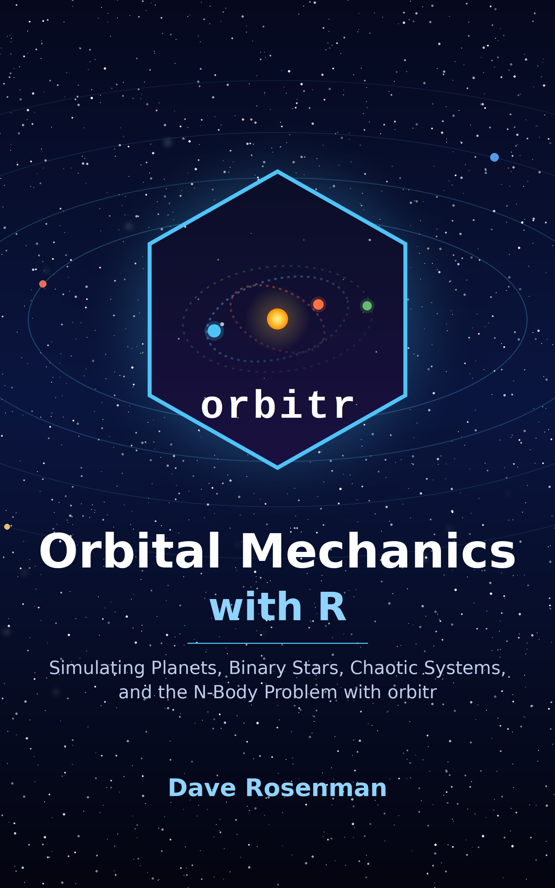

install.packages("orbitr")Orbital Mechanics with R
Simulating Planets, Binary Stars, Chaotic Systems, and the N-Body Problem with orbitr
Preface

For Kerry, a true academic, with a mind so beautiful
it is hard to believe it runs on the laws of physics.
And for my parents, who supported me through not one undergraduate degree but two:
political science at Temple, and then, when I announced the crazy idea
of studying theoretical physics, that one as well.
And lastly for my grandfather, a math teacher, for a million things,
among them the algebra and trigonometry he taught me all over again
before I could start on physics; and for my grandmother,
who powered every one of those sessions with the best Italian food on the planet.
The documentation for orbitr lives at https://orbit-r.com, and it is free. It will show you how to put a planet around a star in four lines of R, how to load the whole solar system from real JPL data, and how to animate a planet orbiting two suns. If all you want is to drive the package, you may not need this book.
This book is about everything the documentation leaves out. The documentation says that simulate_system() uses the Velocity Verlet method by default because it “conserves energy over long timescales.” It does not say why Verlet conserves energy when the textbook Euler method does not, or where the method came from (a 1907 paper about the aurora, as it turns out), or how you would check for yourself that it is doing its job. The documentation gives you the circular-orbit speed \(v_{\mathrm{circ}} = \sqrt{GM/r}\) as a fact. It does not derive it, and it does not tell you how that one formula, pushed a little further, gives you Kepler’s three laws, the shape of every orbit in the solar system, and the velocity formulas that make the Kepler-16 example work.
So this is two books in one. The first is a physics book that uses orbitr the way a lab course uses a bench: every result gets derived on paper and then checked against a simulation you can run yourself. The second is an applications book that uses the physics to do real astrophysics: verifying Kepler’s third law across the solar system, building a binary star from conservation of momentum, watching Mars go retrograde from a geocentric frame, measuring how fast a chaotic triple system forgets its initial conditions.
Who this book is for
Two kinds of readers.
If you know R and are curious about how orbits work, this book will teach you the physics using tools you already have. You will need calculus and vectors, and it helps to have met Newton’s laws once, but you do not need to have taken a mechanics course. Where a derivation needs a fact from mechanics, the fact is stated and explained.
If you are a physics or astronomy student and want to compute, this book will show you how to turn the equations in your mechanics course into working simulations, and how to use tidy data tools to analyze what comes out. You do not need to know R at all. Appendix A — R Basics gets you from nothing to running the book’s code (installing R, packages, the pipe, the handful of dplyr and ggplot2 functions the book uses) in an hour, and points to the free books to read when you want more. Every piece of code in the chapters is explained, and the whole book uses a small, consistent vocabulary.
If the mathematics is the uncertain part, Appendix B — Mathematical Background collects everything the derivations assume (vectors and their products, derivatives of vectors, polar coordinates, Taylor series, the geometry of an ellipse) in one place, with the specific identities the book uses.
If you are both, you will find the two halves of the book talk to each other more than you might expect. The best way to understand a symplectic integrator is to watch a non-symplectic one fail; the best way to understand an orbital element is to vary it and look.
What is in this book
Part I, First Orbits, gets you running. Chapter 1 explains what an N-body simulation is and why anyone bothers when Kepler already solved the two-body problem. Chapter 2 walks through the four-line pipeline and the tidy table it produces.
Part II, Where the Physics Comes From, is the heart of the book. Chapter 3 starts from Newton’s law and builds the N-body equations of motion that the package integrates. Chapter 4 solves the two-body problem by hand and derives everything the documentation states as fact: the orbit equation, Kepler’s laws, the vis-viva equation, circular and escape velocity. Chapter 5 derives the three integrators (Euler, Euler-Cromer, Velocity Verlet), shows why only two of them are fit for orbits, and traces the Verlet method back through molecular dynamics, the aurora, and the Principia. Chapter 6 explains gravitational softening. Chapter 7 derives the conversion from Keplerian orbital elements to the Cartesian state vectors the engine actually uses.
Part III, Doing Astrophysics with orbitr, is the applications half. Each chapter takes a problem from astronomy, sets it up from the physics in Part II, runs it, and analyzes the result with dplyr and ggplot2.
Part IV, Under the Hood, looks at the C++ engine and at the places where a point-mass Newtonian model stops being enough.
The appendices collect the mathematical background the derivations assume, the R needed to run the book, a quick function reference, and the built-in physical constants with their sources.
What you need
- R, version 4.1 or later, from https://cran.r-project.org. The book uses R’s native pipe
|>everywhere. - The orbitr package, version 1.0.0 or later (see the box below).
- The dplyr and ggplot2 packages. They are installed automatically with orbitr. A few chapters also use tidyr.
- For the interactive 3D plots and the animations, the plotly, gganimate, and gifski packages. These are optional; the book tells you when it uses them.
An editor that runs R code chunks (RStudio or Positron, from https://posit.co) makes it easy to run the book’s examples as you read.
The optional packages, in one line:
install.packages(c("tidyr", "plotly", "gganimate", "gifski"))A note on versions
This book is written for orbitr 1.0.0, and every figure in it was produced by that version. Version 1.0 is the point at which the package’s function names, arguments, and defaults became stable: anything that changes afterwards will be deprecated first, so code in this book should keep running on later versions, possibly with a warning pointing at the replacement. Several of the analysis functions the book uses (get_orbital_elements(), get_energy(), conserved_quantities(), continue_simulation(), the barycentric reference frame) were added in 1.0.0 because this book needed them, so it will not run on 0.3.0. The physics in Part II does not depend on the version at all.
How the code works
Every figure and every number in this book was produced by the code shown next to it, when the book was built. Nothing was pasted in from elsewhere. That means two things for you as a reader. First, if you run the code, you should get the same picture. Second, when the text says a simulated period is “about 27 days,” that number came out of the simulation, not out of my head.
Code appears in blocks like this, with output marked by #>:
sqrt(gravitational_constant * mass_earth / distance_earth_moon)
#> [1] 1018.289Two kinds of output from orbitr do not survive the trip to paper. Interactive 3D plots (plot_orbits_3d(), and plot_orbits() whenever a body moves in \(z\)) are plotly widgets, and animations (animate_system()) are GIFs. Throughout the book I use static ggplot2 figures, which are the same in every edition, and pass three_d = FALSE wherever a system has three-dimensional motion so that the figure stays flat.
In a few places this online edition shows the animation or the interactive 3D plot itself; the printed edition replaces those with static snapshots. On your own screen, drop the three_d = FALSE argument from any figure and spin the orbits around.
Conventions
All quantities are in SI units: meters, kilograms, seconds. The built-in constants (mass_earth, distance_earth_sun, speed_moon, …) are all SI, and all of the package’s arguments expect SI. Vectors are set in bold, \(\mathbf{r}\), and their magnitudes in italic, \(r = |\mathbf{r}|\). Unit vectors wear a hat, \(\hat{\mathbf{r}} = \mathbf{r}/r\). Dots denote time derivatives: \(\dot{\mathbf{r}}\) is velocity and \(\ddot{\mathbf{r}}\) is acceleration.
The symbol \(\mu\) always means the gravitational parameter \(\mu = G(M + m)\) of a pair of bodies (or \(GM\) when one is much heavier). Some mechanics texts use \(\mu\) for the reduced mass; this book writes the reduced mass as \(m_r\) to avoid the clash.
A few helper functions that the text defines for the derivations (measuring a period from a time series, solving Kepler’s equation, converting elements to a state vector by hand) are collected in the file R/helpers.R in the book’s source, which every chapter loads, so later chapters use them without repeating the definitions. Everything else is a package function.
Boxes marked Where it comes from give the history of a method or a formula: who found it, what problem they were working on, and how it ended up in the package. Boxes marked Key result collect the formulas you will reuse.
Try it first: the orbitr app
Before any code, it helps to have seen an orbit respond to a change: a planet given a little more speed and swinging out into an ellipse, a time step pushed too far and the orbit falling apart. The orbitr app is the package with a control panel on it. It runs in a browser, needs no installation, and does nothing the code in this book cannot do, which is the point: every control in it corresponds to an argument of a function you will meet in Chapter 2, and when you later type add_body("Moon", mass = mass_moon, x = distance_earth_moon, vy = speed_moon) you will already know what happens when that vy goes up. The app’s Code tab makes that correspondence explicit: whatever system you have set up, it shows the R code that produces exactly what is on the screen. Set up a system by clicking, read the code, paste it into R, and you have run your first simulation.
If the frame above is blank, your browser may be blocking embedded content; the app is also at https://daverosenman.shinyapps.io/orbitr/ in its own tab.
What to try
Each of these is one of the book’s chapters, compressed to a minute.
1. Run a system as given. Choose one of the preset systems and run it without changing anything. The plot that appears is the output of plot_orbits() on a table of positions, and that table is what every chapter in this book works with.
2. Open the Code tab. It shows the R that produced the plot: a create_system(), an add_body() or add_planet() per body, a simulate_system() with the time step and duration you set, and the plotting call. This is the four-line pipeline of Chapter 2, written out for the system in front of you. Every experiment below changes one line of it; look at the Code tab after each one to see which.
3. Give a planet too much speed. Increase one body’s starting velocity by about 10% and run again. The circle becomes an ellipse with the starting point at its closest approach to the star. Increase it by 40% and the ellipse stretches toward escape; at \(\sqrt{2}\) times the circular speed, about 41% more, the body never comes back. Chapter 4 derives exactly why those numbers are what they are.
4. Give it too little. Decrease the speed by 10% instead. The orbit dips inward, and the starting point is now the farthest point of the ellipse rather than the nearest. Same physics, opposite side.
5. Break the time step. Make the time step ten times larger and run the same system. Watch the orbit stop closing on itself. Then make it ten times smaller than the original. Chapter 5 explains what the step does and how to choose it; the short version is that the fastest-moving body in the system decides.
6. Switch the integrator. With a moderate time step, run the same system with Velocity Verlet and then with Euler. The Verlet orbit retraces itself; the Euler orbit spirals outward, gaining energy from nowhere. That spiral is the single most important thing to understand about simulating gravity, and Chapter 5 is about why it happens and how Verlet avoids it.
7. Add a third body. Put a second planet, or a second star, into the system and run it. If the third body is small and far from the others, nothing much changes. If it is comparable in mass and close, the motion stops being predictable in any useful sense. Chapter 11 measures that.
When something surprises you, that is the moment to go to the chapter and find out why. The app shows the behavior and the Code tab shows the call; the book owns the explanation.
Acknowledgments
The physics in this book was shaped by Thornton and Marion’s Classical Dynamics (Thornton and Marion 2004) and Newman’s Computational Physics (Newman 2012), the two books I kept open while writing the engine. The N-body methods follow Aarseth (Aarseth 2003).